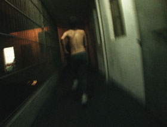

Feng ai – ’Til Madness Do Us Part

Wang Bing – Hongkong, France, Japan 2013 – 228 min.
D: Wang Bing – COP: Wang Bing, Liu Xianhui – E: Adam Kerby, Wang Bing, S: Zhang Mu – P: Y. Production
digital – Mandarin
Wang Bing is regarded as one of today’s greatest documentary filmmakers, one who demands patience from his viewers but rewards it amply. For his latest film, he stayed for months in a half-open psychiatric institution in a provincial town in South China and edited about 280 hours of film into this four-hour documentary. In the (doubtless) stinking, badly (not) maintained spaces where the men stand, sleep, talk, quarrel, wash or urinate close together, Wang’s camera observes them with absolute respect and endless sympathy. – IFF Rotterdam
This film approaches them at a time when they are abandoned by their families and society. There is no freedom in this hospital. But when men are locked behind bars, they are capable of creating a new world, without restrictions of morality or behaviour. Under the night light, their bodies are like ghosts, craving love, physical or sentimental. – Wang Bing
Friday 10/10 6.30 p.m. Filmmuseum –
Presented by DOK.fest München
Wang Bing, born in 1967 in Xi’an, China. He graduated from the Film Academy in Beijing in 1996. He made the 18-episode TV series Campus Affairs and the TV documentary Common People's Homestead. In 1999, he was cameraman for the film Distortion. His debut as a director came with Tiexi District: West of the Tracks, a nine-hour documentary in three parts entitled Rust, Remnants and Rails. He makes installations as well, such as Crude Oil (2008), also shown at UNDERDOX.
Films (selection): Tie Xi Qu (Tiexi District: West of the Tracks) 2003 – He Fengming (Fengming, a Chinese Memoir) 2007 (3. UX) – L'argent du charbon (Coal Money) 2008 (4. UX) – Cai you ri ji (Crude Oil) 2008 (4. UX)